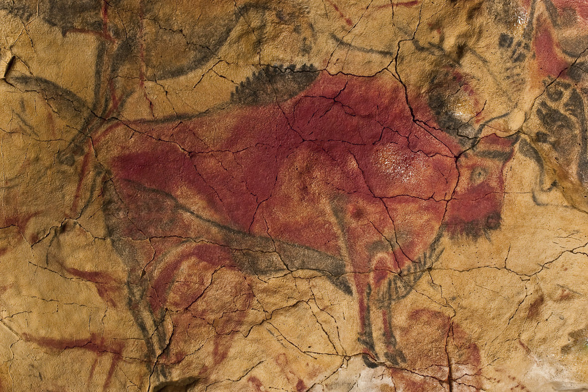
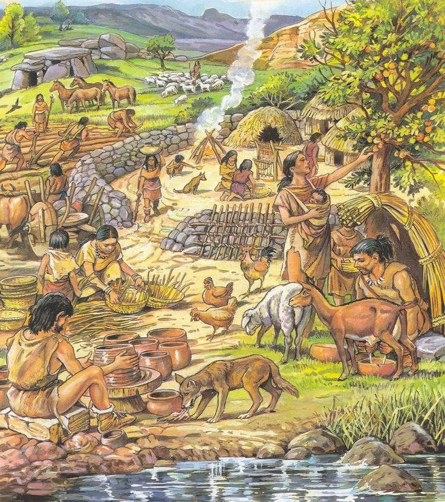
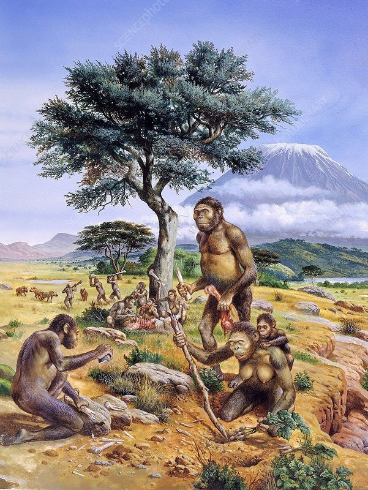
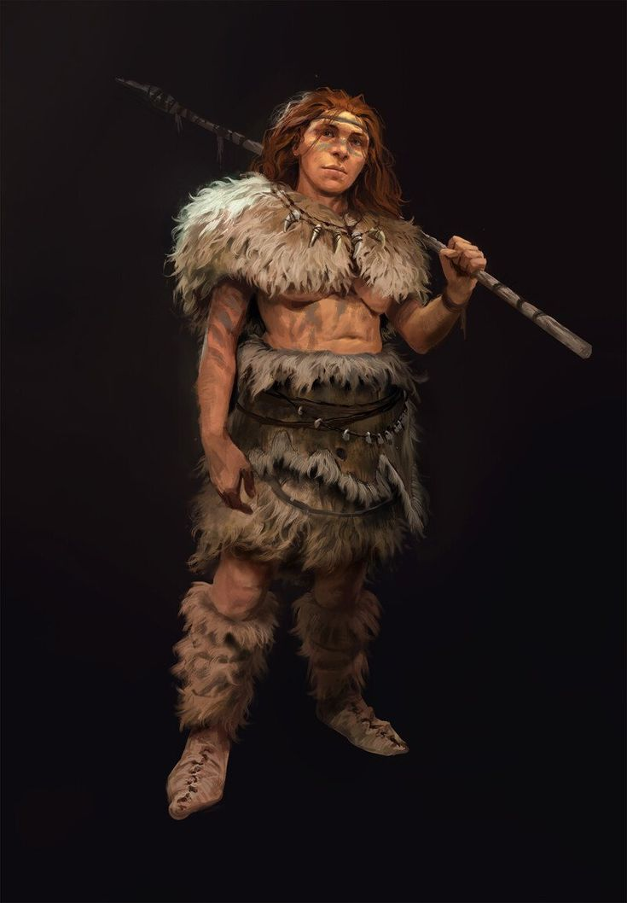
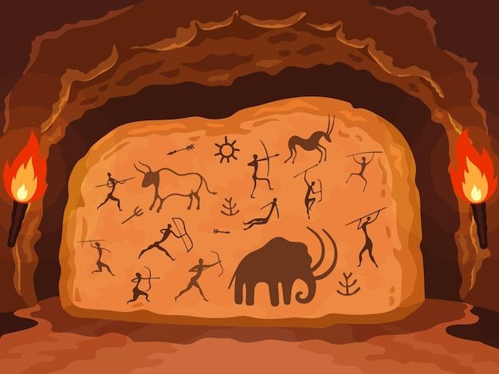

Introducción a la Prehistoria
4 millones de años atrás
Aparición de los primeros homínidos
2.5 millones de años atrás
Inicio del Paleolítico - Primeras herramientas

Arte Rupestre
Pinturas encontradas en cuevas paleolíticas

Arte Rupestre
Civilizacion primitiva del arte prehistorico

Arte Rupestre
Evolucion primitiva de la prehistoria

Arte Rupestre
PPersonaje primitivo de la prehistoria

Arte Rupestre
Pinturas encontradas en cuevas paleolíticas creadas en la epoca prehistorica